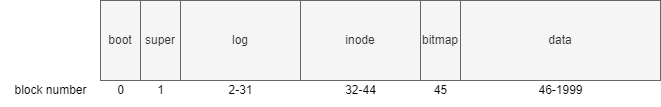
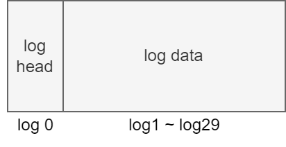

Filesystem-ch3
disk (磁盘)¶
布局¶
sector: 磁盘存取的最小单位。在xv6中为1kb
block: 文件系统存取的最小单位，为sector的任意整数倍。在xv6中为1kb

- boot block: 启动操作系统的代码
- super block: 描述文件系统信息
- log blocks: 日志层
- inode blocks: 存放所有inode
- bitmap block: 记录data block是否空闲
- data blocks: 存储文件和目录的内容
supber block¶
// kernel/fs.h
struct superblock {
uint magic; // Must be FSMAGIC
uint size; // Size of file system image (blocks)
uint nblocks; // Number of data blocks
uint ninodes; // Number of inodes.
uint nlog; // Number of log blocks
uint logstart; // Block number of first log block
uint inodestart; // Block number of first inode block
uint bmapstart; // Block number of first free map block
};
#define FSSIZE 2000 // size of file system in blocks
#define MAXOPBLOCKS 10 // max # of blocks any FS op writes
#define LOGSIZE (MAXOPBLOCKS*3) // max data blocks in on-disk log
#define NINODES 200
// kernel/fs.c
// there should be one superblock per disk device,
// but we run with only one device
struct superblock sb;
// Init fs
void
fsinit(int dev) {
readsb(dev, &sb);
if(sb.magic != FSMAGIC)
panic("invalid file system");
initlog(dev, &sb);
}
// Read the super block.
static void
readsb(int dev, struct superblock *sb)
{
struct buf *bp;
bp = bread(dev, 1);
memmove(sb, bp->data, sizeof(*sb));
brelse(bp);
}
buffer cache¶
struct buf¶
// kernel/buf.h
struct buf {
int valid; // has data been read from disk?
int disk; // does disk "own" buf?
uint dev;
uint blockno;
struct sleeplock lock;
uint refcnt; //
struct buf *prev; // LRU cache list
struct buf *next;
uchar data[BSIZE];
};
bcache¶
// kernel/bio.c
struct {
struct spinlock lock;
struct buf buf[NBUF];
// Linked list of all buffers, through prev/next.
// Sorted by how recently the buffer was used.
// head.next is most recent, head.prev is least.
// 双向循环链表
struct buf head;
} bcache;
bread()¶
// kernel/bio.c
struct buf*
bread(uint dev, uint blockno)
{
struct buf *b;
b = bget(dev, blockno);
if(!b->valid) {
virtio_disk_rw(b, 0);
b->valid = 1;
}
return b;
}
bget()¶
// kernel/bio.c
static struct buf*
bget(uint dev, uint blockno)
{
struct buf *b;
acquire(&bcache.lock);
// Is the block already cached?
for(b = bcache.head.next; b != &bcache.head; b = b->next){
if(b->dev == dev && b->blockno == blockno){
b->refcnt++;
release(&bcache.lock);
acquiresleep(&b->lock);
return b;
}
}
// Not cached.
// Recycle the least recently used (LRU) unused buffer.
// 逆序遍历
for(b = bcache.head.prev; b != &bcache.head; b = b->prev){
if(b->refcnt == 0) {
b->dev = dev;
b->blockno = blockno;
// 还未从磁盘读取数据
b->valid = 0;
b->refcnt = 1;
release(&bcache.lock);
acquiresleep(&b->lock);
return b;
}
}
panic("bget: no buffers");
}
brelese()¶
// kernel/bio.c
void
brelse(struct buf *b)
{
if(!holdingsleep(&b->lock))
panic("brelse");
releasesleep(&b->lock);
acquire(&bcache.lock);
b->refcnt--;
if (b->refcnt == 0) {
// no one is waiting for it.
// b移动到链表表头
b->next->prev = b->prev;
b->prev->next = b->next;
b->next = bcache.head.next;
b->prev = &bcache.head;
bcache.head.next->prev = b;
bcache.head.next = b;
}
release(&bcache.lock);
}
logging¶
why¶
- case 1
// kernel/sysfile.c
static struct inode*
create(char *path, short type, short major, short minor)
{
...
if((ip = ialloc(dp->dev, type)) == 0){
iunlockput(dp);
return 0;
}
<- crashed here, what will happen
...
}
crash会导致我们会丢失这个inode
- case 2
在为文件分配block时
- 从 data blocks 中找到一块空闲 block
- 将该 block number 写入到文件的 inode 中
- 在bitmap中标记该block已使用
如果2，3之间 crash 会怎么样
crash 可能会导致这个 block 被分配给多个文件
fatal !
what¶
buffer cache 之上的一种机制，用来保证系统调用的原子性，同时能够在系统 crash 之后进行 Fast Recovery
how¶
// kernel/log.c
struct logheader {
int n;
int block[LOGSIZE];
};
struct log {
struct spinlock lock;
int start; // start of log blocks
int size; // number of log blocks
int outstanding; // how many FS sys calls are executing.
int committing; // in commit(), please wait.
int dev;
struct logheader lh;
};
struct log log;

log 实现¶
- log write4
当需要更新 inode block 或 bitmap block 或 data block 时，我们并不直接写入到磁盘对应的位置，而是记录一条 log 到磁盘的 log 分区
// kernel/log.c
void
log_write(struct buf *b)
{
int i;
acquire(&log.lock);
if (log.lh.n >= LOGSIZE || log.lh.n >= log.size - 1)
panic("too big a transaction");
if (log.outstanding < 1)
panic("log_write outside of trans");
// 要写入的 block number 已存在
for (i = 0; i < log.lh.n; i++) {
if (log.lh.block[i] == b->blockno) // log absorption
break;
}
log.lh.block[i] = b->blockno;
if (i == log.lh.n) { // Add new block to log?
bpin(b);
log.lh.n++;
}
// i != log.lh.n
// log 已存在并且未 commit，nothing to do
release(&log.lock);
}
- commit
// kernel/log.c
static void
commit()
{
if (log.lh.n > 0) {
write_log(); // Write modified blocks from cache to log
write_head(); // Write header to disk -- the real commit
install_trans(0); // Now install writes to home locations
log.lh.n = 0;
write_head(); // Erase the transaction from the log
}
}
对单个 disk block 的读写具有原子性
commit 可保证系统调用的原子性
// kernel/log.c
static void
write_log(void)
{
int tail;
for (tail = 0; tail < log.lh.n; tail++) {
struct buf *to = bread(log.dev, log.start+tail+1); // log block
struct buf *from = bread(log.dev, log.lh.block[tail]); // cache block
// 将 log 中记录的缓冲块号的缓冲块复制到 log 缓冲块
memmove(to->data, from->data, BSIZE);
// 将 log 缓冲块写出到磁盘
bwrite(to); // write the log
brelse(from);
brelse(to);
}
}
// kernel/log.c
static void
write_head(void)
{
struct buf *buf = bread(log.dev, log.start);
struct logheader *hb = (struct logheader *) (buf->data);
int i;
// 将内存中的 logheader 复制到 log head 的缓冲块
hb->n = log.lh.n;
for (i = 0; i < log.lh.n; i++) {
hb->block[i] = log.lh.block[i];
}
// 将 log head 的缓冲块写出到磁盘
bwrite(buf);
brelse(buf);
}
- install trans
// kernel/log.c
static void
install_trans(int recovering)
{
int tail;
for (tail = 0; tail < log.lh.n; tail++) {
struct buf *lbuf = bread(log.dev, log.start+tail+1); // read log block
struct buf *dbuf = bread(log.dev, log.lh.block[tail]); // read dst
memmove(dbuf->data, lbuf->data, BSIZE); // copy block to dst
bwrite(dbuf); // write dst to disk
if(recovering == 0)
bunpin(dbuf);
brelse(lbuf);
brelse(dbuf);
}
}
- clean log
// kernel/log.c
static void
commit()
{
...
log.lh.n = 0;
write_head(); // Erase the transaction from the log
}
- recovery
// kernel/log.c
static void
recover_from_log(void)
{
read_head();
install_trans(1); // if committed, copy from log to disk
log.lh.n = 0;
write_head(); // clear the log
}
usage¶
uint64
sys_open()
{
...
// 合法性检查
begin_op();
...
log_write();
...
log_write();
...
end_op();
...
}
// kernel/log.c
void
begin_op(void)
{
acquire(&log.lock);
while(1){
// 有系统调用正在 commit
if(log.committing){
sleep(&log, &log.lock);
// 可能超出 log 大小限制
} else if(log.lh.n + (log.outstanding+1)*MAXOPBLOCKS > LOGSIZE){
// this op might exhaust log space; wait for commit.
sleep(&log, &log.lock);
} else {
log.outstanding += 1;
release(&log.lock);
break;
}
}
}
// kernel/log.c
void
end_op(void)
{
int do_commit = 0;
acquire(&log.lock);
log.outstanding -= 1;
if(log.committing)
panic("log.committing");
// 所有系统调用都已经 end_op()
if(log.outstanding == 0){
do_commit = 1;
log.committing = 1;
} else {
// begin_op() may be waiting for log space,
// and decrementing log.outstanding has decreased
// the amount of reserved space.
wakeup(&log);
}
release(&log.lock);
// if log.outstanding != 0
// noting to do
if(do_commit){
// call commit w/o holding locks, since not allowed
// to sleep with locks.
commit();
acquire(&log.lock);
log.committing = 0;
wakeup(&log);
release(&log.lock);
}
}